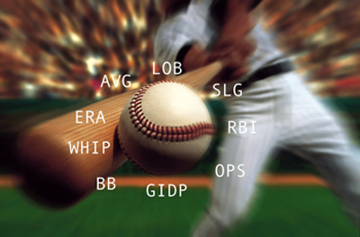
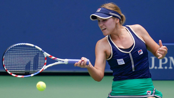

🏠 Home › Fundamentals › Strategy › Using Statistics to Improve Results
Using Statistics to Improve Results¶
Andy Durham¶

Some of the 85 core baseball stats.
If you took a college statistics course you probably remember it with the same thrill as having to clean your room as a child. You learned terms and formulas that seemed to have no real world applications.
But today in most sports statistics have become a sophisticated science for gaining a competitive advantage from amateur to professional levels. Most sports have a myriad of well-known numbers, statistics that measure everything from the average length of a six iron, to free throw percentage, to yards per run, to batting percentage on.
A quick count I made of core stats showed baseball has 85, basketball has 47, and soccer has 45. Teams use this information to recruit talent, improve strengths, and shore up weaknesses. But also to scout opponents to take advantage of their weaknesses and to counteract their strengths.
In other sports these statistics are taken as a given and are readily available for every level of athlete from beginner to professional. But this is not the case for tennis. In tennis these critical statistics have until recently only been available for high level athletes, typically elite college and tour players.

Most coaches rely on individual knowledge and personal experience.
Instead tennis coaches across the world have relied on individual knowledge, personal experience, and sometimes video and other information from education to help their athletes.
I believe there is a major gap in the potential for player improvement in tennis compared to other sports due to a lack of the most basic numbers. This short fall needs to be addressed if we want to accelerate the development of our players.
Who?
But who could be in charge of getting this information? Obviously not the players who are busy playing tournament matches. And few coaches are able to attend competitions on a regular basis.
Family influence is crucial through positive focus and encouragement.
The most likely person who could do this is a parent, a friend, or a mentor—anyone who regularly attends tournaments with the player.
Currently parents usually only pay for lessons, transport the player to tournaments and sit frustrated on the sideline. Many of us have witnessed how difficult it can be for parents, who don't usually understand what happens on the court, not to mention for the player, and of course the coach who has to rely on second hand anecdotal information.
The importance of the family or mentor role in an athlete's development is crucial. Heavily involved families with a positive focus assist athletes through encouragement, focus, and support. But now affordable technologies are enhancing the family and mentor role by allowing them to have a significant impact across all facets of the player's game.
Newly published apps provide a way for all levels of tennis players to have access to the performance enhancing data that was previously exclusive to high end athletes. A few new apps such as my RacketStats, MatchTracker, ProTracker are examples of apps currently available on the market.
Each differs on the ease of use, the information available, and the costs. Apps like these can empower parents, coaches, and mentors to join forces in developing a player to their full potential.
What should you expect from such an app? Three key areas are listed below.
Three Key Areas¶
-
Ease of Use
-
Number of Important Stats Available
-
Easily Digestible Relevant Information
These apps are very valuable for scouting. A good app will point out the other player's strengths and weaknesses so you can create an effective game plan. This is done in every other sport.
Your job as a parent, mentor, or coach is to ensure that your player improves as quickly as possible, and learning to make successful game plans should be part of their education.

Racket Stats provides the numbers to optimize performance. (Click Here.)
I believe it takes a team to develop an athlete to their full potential. These apps provide valuable feedback to optimize player performance, not by opinion, but by factual data.
What to Evaluate
When we evaluate a player's game, there are many viewpoints. Do they hit lots of winners? Do they make too many mistakes? Do they go to the net too little or too much? Do they defend well?
What I believe sets Racket Stats apart is what we call the Win/Error Ratio. All points end with either a winner or error, either a forced error or an unforced error. The Win/Error Ratio function in Racket Stats automatically totals all of these to give you that ratio.
This is created by dividing the winners by the errors. For instance, if you hit 10 winners and make 20 errors you divide 10 by 20 and get a Win/Error ratio .50.
For the player, this ratio can be improved in one or both of two ways: increasing the number of winners or reducing the number of errors. For example if the player now hits 15 winners while committing the same 20 errors, then the Win/Error ratio is now .75. If the number winners remains the same, but the number of errors is reduced to 15, then the Win/Error ratio is .67.

What did the numbers show about Iga Świątek's victory in the 2020 French Open?
For the purpose of the Win/Error ratio, a "winner" is a shot hit cleanly past the opponent, or one that is tipped or just impossible to return. An "error" is any shot a player hits into the net or out of the court.
In the first article in this series we discussed another metric developed by Bill Jacobson, called the Aggressive Margin. (Click Here.) The difference compared to our Win/Error ratios is that the Aggressive Margin distinguishes between forced and unforced errors.
The Aggressive Margin adds a further level of understanding to the analysis, and we plan to incorporate it into future versions of Racket Stats. But for now the Win/Error ratio gives players, parents and coaches a great place to start by giving an overview of how and where matches are won and lost.
So when we look at a printout of a match from Racket Stats, the first area to look at is the Win/Error Ratio for both players. Let's use a recent pro match example to see what the ratios show.
In the 2020 Women's French Open Final, Iga Świątek defeated Sophia Kevin 6-4, 6-1. Kenin hit only 5 winners while making 36 errors. Her Win/Error ration was therefore only.14. In contrast Świątek hit 27 winners with only 41 errors for a ratio of .66.
History shows that top players usually have a Win/Error of around .40 to .50, that is for every winner they hit, they also make two errors. Kenin was well below this and Świątek was well above.
The role of the coach is not only to see this, but then to find out where the winners and errors came from. To simplify this, the Racket Stats match report is broken into Serve, Return, Groundstroke, Net and Summary sections, and each of these sections has a Win/Error section. By scanning the sections, you get a quick view of where the winners and errors are coming from.

Kenin's Win/Error ratio was significantly lower than Swiatek's on the baseline.
Win/Error Ratio averages change as you look at each of these sections. The ratio is usually fairly high for the Serve and Net Sections, but much lower for Returns and Groundstrokes.
Kenin and Świątek squared off evenly in the Serve Section both with a Win/Error Ratio of .33. But that changed at the net, where Kenin's ratio was 1.0 while Świątek dominated with a ration9.0.
In the Return Section, Kenin won the battle with .60 ratio, against Świątek ratio of 0.00, meaning Świątek hit no return winners.
The chart summarizes the Win/Error rations for both players.
| Kenin | Swiatek | |
|---|---|---|
| Serve | 1:3 = .33 | 1:3 =.33 |
| Return | 6:10 = .60 | 0:7 =.00 |
| Groundstroke | 3:8 = .38 | 9:1 = 9.00 |
| Overall | 5:36 = .14 | 27:41 = .66 |
Baselines
So when you look at your child or student, the first thing you need to do is to chart several matches to establish a trustworthy baseline and look at the Overall Win/Error Ratio. Then look at the ratios in the different areas, and depending on the player's game, pick the most important areas, and get to work either increasing the winners or reducing the errors.

A critical factor was Swiatek's Win/Error ratio at the net.
With Racket Stats you also get statistics while the match is in progress, Live Stats. Between changeovers or delays, you can look at the stats for both players to become aware of where each player is succeeding and failing.
Let's say that when your player is serving 2nd serves to the deuce court that they are winning 51% of the points. But when serving 2nd serves to the ad court they are winning only 35% of the points.
This is where you as a coach take over. For the remainder of the match, you take notice of what the players do when in those ad court 2nd serve situation occurs.
Stats mean little unless you can attach a "why" to it, and you as the coach are the only one that can see the root cause. With the right stats in hand your next practice can be very focused.
Of course, the Win/Error Ratio will change a bit on the day and in particular against differing opponents, but once you understand when these changes happen, you can prepare your player to handle these situations, making them more competitive against every type of opponent.
Andy Durham is the founder of RacketStats.com, an app allowing parents, players and coaches an easy system to chart and get access to vital statistics. He is a member of the USPTA, PTR and has been teaching for 48 years, many of his students rising to college, WTA and ATP levels. Currently he is the Director of Tennis at the Cindy Hummel Tennis Center in Auburndale, Florida. You can reach Andy at info@racketstats.com
← Previous: Using Statistics in Coaching | 🏠 Strategy Home | Next: Why Poaching is Overrated →